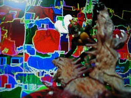
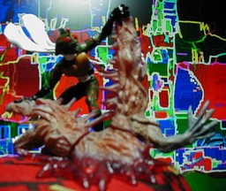

仮面ライダー イマジネイション３ アマゾン

正面（ピンボケ）
横（ピンボケ） BANDAI 仮面ライダー HG シリーズ 仮面ライダー イマジネイション３ の「解き放て！野生の力 仮面ライダーアマゾン」です。高さは 8cm 弱です。今回の背景はオリジナルと言えます。ただし、フリーのレタッチソフト GIMP のフィルタを組み合わせて使っただけですので、完全なオリジナルとも言えません。 更新：06/02/04 初公開：2006年02月04日 01:48:52
Links: 仮面ライダー イマジネイション３: http://catalog.bandai.co.jp/item/4543112347503000.html (hbm) GIMP: http://www.gimp.org/ (hbm)